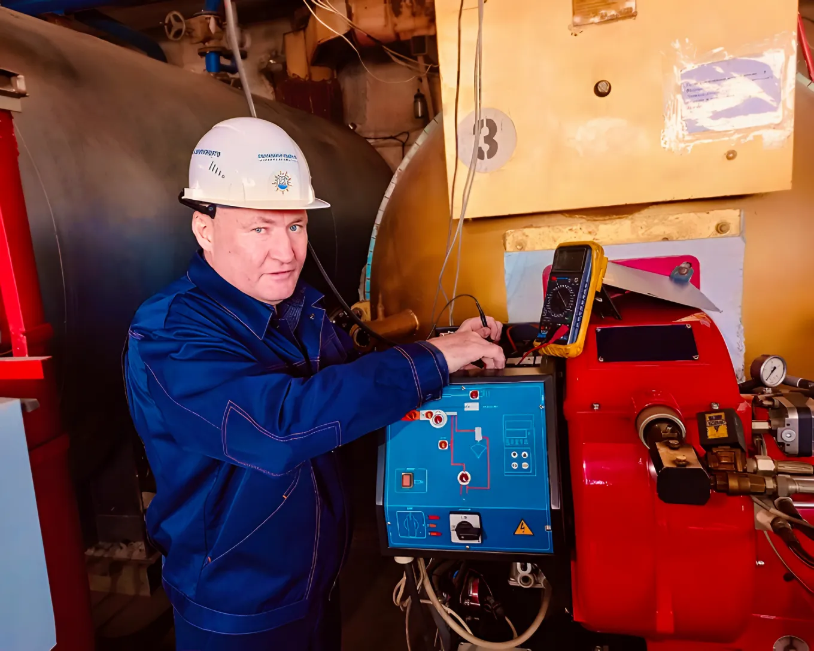

Тепло там, где мы!
Ямалкоммунэнерго — крупнейшее в Ямало‑Ненецком автономном округе ресурсоснабжающее предприятие.
Путь тепла в цифрах
- 122котельные в городах, районных центрах и посёлках
- 982,34 кммагистральных и распределительных тепловых сетей в двухтрубном исполнении
- 25тепловых пунктов
- 44электростанции и 487,4 км линий электропередачи
- 209,5 тыс.лицевых счетов по всем видам коммунальных услуг для жителей Ямала
Десять филиалов, один тепловой контур
Обслуживаемая территория: 552 100 км². На ней 5 крупных по северным меркам городов, 4 районных центра и 48 поселений.
- Приёмная
- Диспетчерская
- Почта
Потребителям
Мы работаем с населением, предприятиями и организациями городов и районов Ямала. С юридическими лицами заключено более 7,6 тысячи договоров.
Подключение к сетям
С 2011 года собираем энергетику Ямала в одно целое
Учреждено ОАО «Ямалкоммунэнерго». 11 июля общество зарегистрировано.
Первые филиалы: Надымский, Тазовский и Пуровский районы, города Муравленко и Губкинский.
Филиал в Шурышкарском районе.
Филиал в Приуральском районе.
Филиал в Ямальском районе объединил работников шести муниципальных организаций. Общество переименовано в АО.
Дочерним предприятием стало ООО ЭК «Тепло‑Водо‑Электро‑Сервис».
Объекты теплогенерации в Тарко‑Сале: 12 МВт.

Свыше 5000 человек держат тепло
Средний возраст персонала — 43 года.
Ответим по существу
629004, г. Салехард, ул. Республики, д. 67, офис 600
office@id.yamalkomenergo.ru